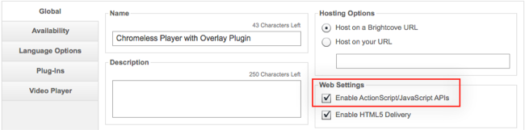

WARNING: The Smart Player had been deprecated and should not be used for new projects. Click here for more information.
Smart Player API Samples: Custom Overlay Plugin
This sample uses a JavaScript plugin to add custom overlays to a Video Cloud player. While the video is playing, an overlay displays clickable scrolling text. When the video stops, an overlay displays a clickable icon and text prompting the user to like the video on FaceBook.
Overlays that appear over your videos while they are playing are a great way to present a call to action or promotion. You can add custom overlays to both the Flash and HTML versions of your Smart Players. For Flash players, the overlay can include web graphics in GIF, JPG, or PNG format as well as SWFs. For HTML players, you can include any valid HTML. Regardless of the player type you can:
- control the size and position of the overlay
- use media events to control when the overlay appears, disappears, and changes
While this JavaScript plugin only works in HTML5 mode, you can create an equivalent SWF plugin to work in Flash mode. Click here to view the ActionScript code.
3rd party libraries used in this sample
Note: 3rd party libraries are used to simplify the JavaScript in the sample. These libraries are not supported by Brightcove. All functionality can be reproduced in ordinary JavaScript.
- jQuery (in this case, jQuery is automatically included in the page within the iframe that contains the HTML5 player, so there is no need to include it again)
Note: This sample will not work in Firefox or on phones. The overlays will appear on iPads, but will not be clickable, because the iOS media controls block clicks on the player screen. You can find another approach that will work on iPad in the Smart Player API Samples: Overlay Messagedocument.
API resources used
This sample uses the following API resources
Modules and methods
- EXPERIENCE
- getReady()
- VIDEO_PLAYER
- addEventListener()
Events
- TEMPLATE_READY
- media: PLAY
- media: STOP
The player
A standard Chromeless Video Player is used for this sample.
Select the Enable ActionScript/JavaScript APIs web setting:

Add the custom plugin to the player:

How it is done
Creating plugins is a little different than scripting in the page. First, because the script is now executed in the context of the player, methods are synchronous, so that instead of:
videoPlayer.getCurrentVideo( function(videoDTO) {// handle the results});
You can just write:
var videoDTO = videoPlayer.getCurrentVideo();
Also, you do not really need to set up an event handler for the templateLoad event, because the plugin cannot execute until the template is loaded.
The templateReady event is a little more tricky, as you cannot be certain whether it has fired or not. Therefore, the EXPERIENCE module has a getReady() method that allows you to check, and best way to set this up
is to use a conditional block like this:
// if templateReady has already fired, execute handler, otherwise set up the listener
if (experience.getReady()) {
onPlayerReady();
} else {
experience.addEventListener(
brightcove.player.events.ExperienceEvent.TEMPLATE_READY,onPlayerReady);
}
Apart from these differences, coding is pretty much the same.
One reason we are using a plugin here, is that it allows us to use the VIDEO_PLAYER overlay() method, which does not work when called from script in the page. The method returns an empty div tag (or Sprite, if you are writing
a SWF plugin) positioned over the player. Into the overlay we inject some HTML:
- While the video is playing, a
canvaselement is added with clickable scrolling text. This is done using the jQuery Marquee plugin. - When the video stops, a
divelement is added that contains a link to like the video on FaceBook.
Note: The overlay() method only works when invoked in plugins - it will not work if you invoke it from JavaScript in the player page.
The code
Modifications to the player publishing code
<!-- smart player api params -->
<!-- note that we don't need to specify templateLoad/Ready handlers -->
<param name="includeAPI" value="true" />
JavaScript used for the plugin:
You can download the code for the JavaScript plugin here.
To get your overlay to fit the size of the player, you can use JavaScript to get the player size on resize events and set the width and height of the overlay, but this can be problematic. Safari on the iPad does not consistently fire resize events inside an iframe for orientation changes. To avoid this problem, use CSS to make the overlay fill the player as follows:
position: fixed;
width: 100%;
height: 100%;In this solution, for the FaceBook like container, we set the CSS width property to 100% to match the size of the player, even when the orientation changes. We set the height property to 60% to expose the player controls.
Here is the complete plugin code:
Note: Remember that to make the plug-in work for Smart Players in both Flash and HTML modes, you need to add both a JavaScript and ActionScript (SWF) plug-in.